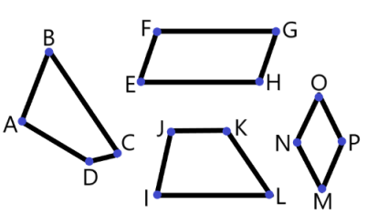
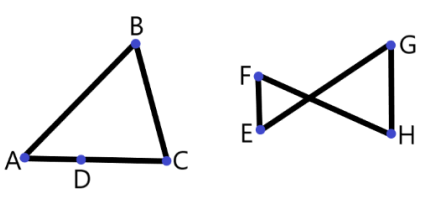
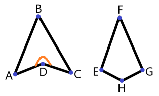
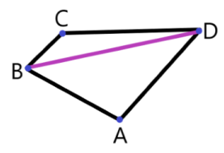

Определение 43:
Четырёхугольник — это геометрическая фигура,
состоящая из четырёх точек, соединённых четырьмя отрезками;
причём никакие два соседних отрезка не лежат на одной прямой и
никакие два несоседних отрезка не имеют общих точек.

Рис. 41 к определению 43. ABCD, EFGH, IJKL и MNOP — четырёхугольники.

Рис. 42. ABCD и EFGH — НЕ четырёхугольники.
Определение 44:
Два четырёхугольника называются равными, если их можно совместить наложением.
Определение 45:
Отрезок, соединяющий противолежащие вершины четырёхугольника, называют диагональю.

Рис. 43. ABCD — невыпуклый четырёхугольник (∠ADC > 180°), EFGH — выпуклый четырёхугольник.
Определение 46:
Невыпуклый четырёхугольник — это четырёхугольник, в котором есть угол, градусная мера которого больше развёрнутого угла.
Примечание: угол, градусная мера которого больше 180°, внешне
может быть похож на острый. Такие углы не рассматривались
в седьмом классе .
Они "вогнуты" в четырёхугольник (или в другой многоугольник), и рассматривать их нужно со внутренней области фигуры.Определение 47:
Выпуклый четырёхугольник — это четырёхугольник, в котором все углы меньше развёрнутого.
Теорема 75:
Сумма углов четырёхугольника равна 360°.

Рис. 44 к обоснованию теоремы 75.
Обоснование теоремыДано: ABCD — четырёхугольник.Доказать: ∠DAB + ∠ABC + ∠BCD + ∠CDA = 360°.Доказательство:1. Сделаем дополнительное построение: проведём диагональ BD.2. Сумма углов любого треугольника равна 180°.3. Сумма углов четырёхугольника ABCD равна сумме углов △ABD и △CBD,
ведь эти два треугольника получились после проведения диагонали в ABCD.
Значит, ∠DAB + ∠ABC + ∠BCD + ∠CDA = 180° + 180° = 360°, что и требовалось доказать.Теорема-следствие 6:
В четырёхугольнике только один из углов может быть больше развёрнутого.
Теорема 76 (теорема о неравенстве четырёхугольника):
Длина любой стороны четырёхугольника меньше суммы длин трёх других сторон.